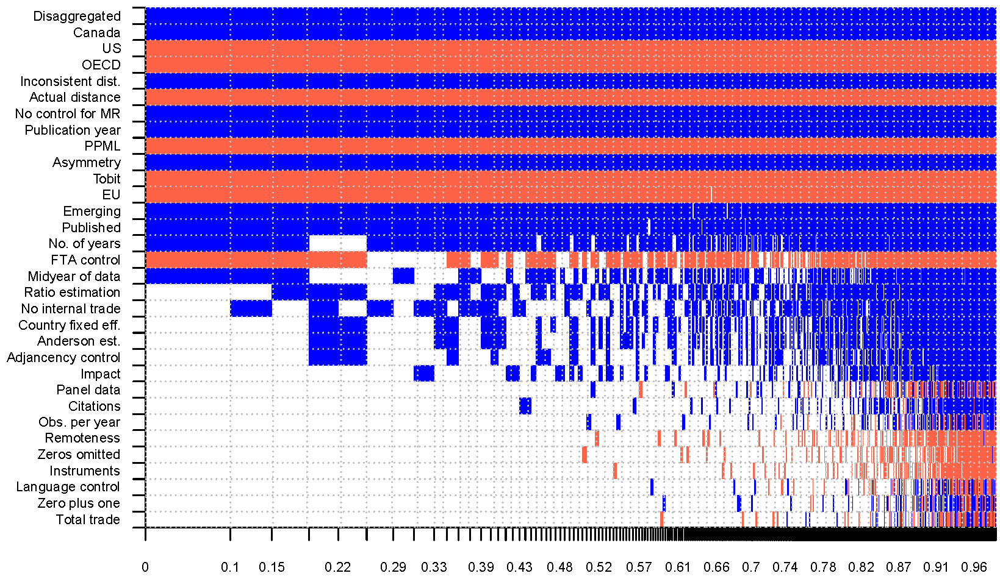

Abstract
National borders reduce trade, but most estimates of the border effect seem puzzlingly large. We show that major methodological innovations of the last decade combine to shrink the border effect to a one-third reduction in international trade flows worldwide. For the computation we collect 1,271 estimates of the border effect reported in 61 studies, codify 32 aspects of study design that may influence the estimates, and use Bayesian model averaging to take into account model uncertainty in meta-analysis. Our results suggest that methods systematically affect the estimated border effects. Especially important is the level of aggregation, measurement of internal and external distance, control for multilateral resistance, and treatment of zero trade flows. We also find that the magnitude of the border effect is associated with country characteristics, such as size and income.
Fig: Determinants of the reported border effects
Reference: Tomas Havranek and Zuzana Irsova (2017), "Do Borders Really Slash Trade? A Meta-Analysis." IMF Economic Review 65(2), 365-396.